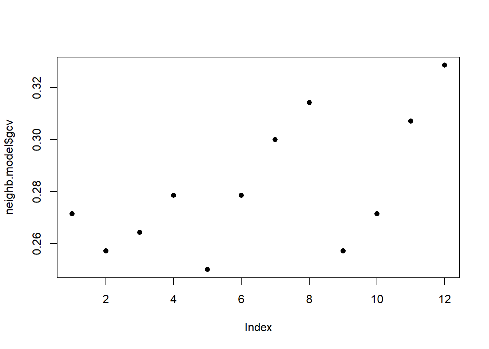

Kapitola 4 Závislost na parametru \(\sigma^2_{shift}\)
V této části se budeme zabývat závislostí výsledků ze sekce 2 na hodnotě \(\sigma^2_{shift}\), která definuje rozptyl normálního rozdělení, ze kterého generujeme posun pro generované křivky. Očekáváme, že s rostoucí hodnotou \(\sigma^2_{shift}\) se budou výsledky jednotlivých metod zhoršovat a tudíž klasifikace nebude tak úspěšná. Přitom předpokládáme, že metody, které využívají funkcionální podstatu dat, budou více úspěšné v porovnání s klasickými metodami při zvětšující se hodnotě \(\sigma^2_{shift}\). V předchozí sekci 3 jsme se podívali na závislost výsledků na hodnotě \(\sigma^2\), tedy na rozptylu normálního rozdělení, ze kterého generujeme náhodné chyby kolem generujících křivek.
4.1 Simulace funkcionálních dat
Nejprve si simulujeme funkce, které budeme následně chtít klasifikovat. Budeme uvažovat pro jednoduchost dvě klasifikační třídy. Pro tuto simulaci zvolíme následující postup:
zvolíme vhodné body (pro každou klasifikační třídu jiné), které proložíme interpolačním splajnem,
takto získané funkce využijeme ke generování náhodných křivek pro obě třídy,
generujeme body ze zvoleného intervalu pomocí vyhlazených funkcí interpolačním splajnem, které obsahují, například gaussovský, šum,
takto získané diskrétní body vyhladíme do podoby funkcionálního objektu pomocí nějakého vhodného bázového systému.
Tímto postupem získáme funkcionální objekty společně s hodnotou kategoriální proměnné \(Y\), která rozlišuje příslušnost do klasifikační třídy.
Code
Uvažujme tedy dvě klasifikační třídy, \(Y \in \{0, 1\}\), pro každou ze tříd stejný počet n generovaných funkcí.
Definujme si nejprve dvě funkce, každá bude pro jednu třídu.
Funkce budeme uvažovat na intervalu \(I = [0, 12]\).
V tomto případě si definujeme v prvním kroku body, kterými má náš interpolační splajn procházet. Následně proložíme těmito body interpolační splajn, k čemuž využijeme funkci spline() z knihovny stats. Pro lepší interpretovatelnost simulovaných dat jsme definovali interval \(I = [0, 12]\) a funkce pro obě klasifikační třídy zvolíme tak, aby při troše fantazie mohli představovat například vývoj určité veličiny (teplota, tlak, srážky, nezaměstnanost, prodej nějaké komodity atd.) v průběhu roku. Budeme předpokládat, že se vývoj této veličiny periodicky opakuje v čase (s roční periodou), proto ve funkci spline() zvolíme parametr method = 'periodic'.
Code
# definujici body pro tridu 0
x.0 <- c(0, 2, 2.96, 3.64, 4.2, 5.3, 6.22, 7.32, 8.3, 9.3, 10.6, 11.54, 12)
y.0 <- c(3, 4.66, 4.6, 3.48, 2.08, 1.5, 1.32, 2.78, 3.82, 4.48, 3.88, 3.16, 3)
# definujici body pro tridu 1
x.1 <- c(0, 1.3, 2, 2.7, 3.33, 3.68, 4.06, 4.72, 5.9, 6.9, 8, 9.02, 10.1, 11.25, 12)
y.1 <- c(2.8, 3.95, 4.82, 5.1, 4.8, 4, 2.73, 1.67, 1.53, 2.2, 3, 3.73, 3.69, 3.6, 2.8)
# # definujici body pro tridu 0
# x.0 <- c(0, 2, 2.96, 3.64, 4.2, 5.3, 6.22, 7.32, 8.3, 9.3, 10.6, 11.54, 12)
# y.0 <- c(3, 4.66, 4.6, 3.48, 2.08, 1.5, 1.32, 2.78, 3.82, 4.48, 3.88, 3.16, 3)
#
# # definujici body pro tridu 1
# x.1 <- c(0, 1.3, 2, 2.7, 3.33, 3.68, 4.06, 4.72, 5.9, 6.9, 8, 9.02, 10.1, 11.25, 12)
# y.1 <- c(2.9, 3.95, 4.62, 4.6, 4.1, 3.6, 2.73, 1.67, 1.53, 2.2, 3, 3.73, 3.69, 3.6, 2.9)Code

Jejich grafy jsou na obrázcích níže.
Code
# generujici funkce pro Y = 0 a Y = 1
funkce_0 <- function(n) {
sp <- spline(x.0, y.0, method = 'periodic', n = n)
return(list(x = sp$x, y = sp$y))
}
# pridat nahodny posun v zacatku nebo periode
funkce_1 <- function(n) {
sp <- spline(x.1, y.1, method = 'periodic', n = n)
return(list(x = sp$x, y = sp$y))
}Code
![Znázornění dvou funkcí na intervalu $[0, 1]$, ze kterých generujeme pozorování ze tříd 0 a 1.](04-Simulace_2_shift_files/figure-html/unnamed-chunk-5-1.png)
Obrázek 3.1: Znázornění dvou funkcí na intervalu \([0, 1]\), ze kterých generujeme pozorování ze tříd 0 a 1.
Nyní si vytvoříme funkci pro generování náhodných funkcí s přidaným šumem (resp. bodů na předem dané síti) ze zvolené generující funkce.
Argument t označuje vektor hodnot, ve kterých chceme dané funkce vyhodnotit, fun značí generující funkci, n počet funkcí a sigma směrodatnou odchylku \(\sigma\) normálního rozdělení \(\text{N}(\mu, \sigma^2)\), ze kterého náhodně generujeme gaussovský bílý šum s \(\mu = 0\).
Abychom ukázali výhodu použití metod, které pracují s funkcionálními daty, přidáme při generování ke každému simulovanému pozorování navíc i náhodný člen, který bude mít význam vertikálního posunu celé funkce.
Tento posun budeme generovat s normálního rozdělění s parametrem \(\sigma^2 = 4\).
Code
generate_values <- function(t, fun, n, sigma, sigma_shift = 0) {
# Arguments:
# t ... vector of values, where the function will be evaluated
# fun ... generating function of t
# n ... the number of generated functions / objects
# sigma ... standard deviation of normal distribution to add noise to data
# sigma_shift ... parameter of normal distribution for generating shift
# Value:
# X ... matrix of dimension length(t) times n with generated values of one
# function in a column
X <- matrix(rep(fun(length(t))$y, times = n), ncol = n, nrow = length(t), byrow = FALSE)
noise <- matrix(rnorm(n * length(t), mean = 0, sd = sigma),
ncol = n, nrow = length(t), byrow = FALSE)
shift <- matrix(rep(rnorm(n, 0, sigma_shift), each = length(t)),
ncol = n, nrow = length(t))
return(X + noise + shift)
}Nyní můžeme generovat funkce.
V každé ze dvou tříd budeme uvažovat 100 pozorování, tedy n = 100.
Code
Vykreslíme vygenerované (ještě nevyhlazené) funkce barevně v závislosti na třídě (pouze prvních 10 pozorování z každé třídy pro přehlednost).
Code
n_curves_plot <- 10 # pocet krivek, ktere chceme vykreslit z kazde skupiny
DF0 <- cbind(t, X0[, 1:n_curves_plot]) |>
as.data.frame() |>
reshape(varying = 2:(n_curves_plot + 1), direction = 'long', sep = '') |>
subset(select = -id) |>
mutate(
time = time - 1,
group = 0
)
DF1 <- cbind(t, X1[, 1:n_curves_plot]) |>
as.data.frame() |>
reshape(varying = 2:(n_curves_plot + 1), direction = 'long', sep = '') |>
subset(select = -id) |>
mutate(
time = time - 1,
group = 1
)
DF <- rbind(DF0, DF1) |>
mutate(group = factor(group))
DF |> ggplot(aes(x = t, y = V, group = interaction(time, group),
colour = group)) +
geom_line(linewidth = 0.5) +
theme_bw() +
labs(x = 'x',
y = 'y',
colour = 'Klasifikační\n třída') +
scale_colour_discrete(labels=c('Y = 0', 'Y = 1'))
Obrázek 3.2: Prvních 10 vygenerovaných pozorování z každé ze dvou klasifikačních tříd. Pozorovaná data nejsou vyhlazená.
4.2 Vyhlazení pozorovaných křivek
Nyní převedeme pozorované diskrétní hodnoty (vektory hodnot) na funkcionální objekty, se kterými budeme následně pracovat. Jelikož se nyní jedná o periodické křivky na intervalu \(I = [0, 12]\), využijeme k vyhlazení fourierovu bázi.
Za uzly bereme celý vektor t, budeme uvažovat tzv. harmonic acceleration penalties. Harmonic acceleration pro funkci \(x(t)\) je
\[
Lx = \omega^2 Dx + D^3x,
\]
kde \(D^mx\) značí \(m\)-tou derivaci funkce \(x(t)\) podle \(t\). Platí přitom \(L\sin(\omega x) = 0 = L\cos(\omega x)\). Potom jako penalizaci bereme hodnotu funkcionálu
\[
J_L(x) = \int \left[Lx(t)\right]^2\text dt.
\]
Code
Najdeme vhodnou hodnotu vyhlazovacího parametru \(\lambda > 0\) pomocí \(GCV(\lambda)\), tedy pomocí zobecněné cross–validace. Hodnotu \(\lambda\) budeme uvažovat pro obě klasifikační skupiny stejnou, neboť pro testovací pozorování bychom dopředu nevěděli, kterou hodnotu \(\lambda\), v případě rozdílné volby pro každou třídu, máme volit.
Code
# spojeni pozorovani do jedne matice
XX <- cbind(X0, X1)
lambda.vect <- 10^seq(from = -3, to = 2, length.out = 25) # vektor lambd
gcv <- rep(NA, length = length(lambda.vect)) # prazdny vektor pro ulozebi GCV
for(index in 1:length(lambda.vect)) {
curv.Fdpar <- fdPar(fbasis, harmLfd, lambda.vect[index])
FSmooth <- smooth.basis(t, XX, curv.Fdpar) # vyhlazeni
gcv[index] <- mean(FSmooth$gcv) # prumer pres vsechny pozorovane krivky
}
GCV <- data.frame(
lambda = round(log10(lambda.vect), 3),
GCV = gcv
)
# najdeme hodnotu minima
lambda.opt <- lambda.vect[which.min(gcv)]Pro lepší znázornění si vykreslíme průběh \(GCV(\lambda)\).
Code
GCV |> ggplot(aes(x = lambda, y = GCV)) +
geom_line(linetype = 'dashed', linewidth = 0.8) +
geom_point(size = 2.5) +
theme_bw() +
labs(x = bquote(paste(log[10](lambda), ' ; ',
lambda[optimal] == .(round(lambda.opt, 4)))),
y = expression(GCV(lambda))) +
geom_point(aes(x = log10(lambda.opt), y = min(gcv)), colour = 'red', size = 3)
Obrázek 1.5: Průběh \(GCV(\lambda)\) pro zvolený vektor \(\boldsymbol\lambda\). Na ose \(x\) jsou hodnoty vyneseny v logaritmické škále. Červeně je znázorněna optimální hodnota vyhlazovacího parametru \(\lambda_{optimal}\).
S touto optimální volbou vyhlazovacího parametru \(\lambda\) nyní vyhladíme všechny funkce a opět znázorníme graficky prvních 10 pozorovaných křivek z každé klasifikační třídy.
Code
curv.fdPar <- fdPar(fbasis, harmLfd, lambda.opt)
FSmooth <- smooth.basis(t, XX, curv.fdPar)
XXfd <- FSmooth$fd
fdobjSmootheval <- eval.fd(fdobj = XXfd, evalarg = t)
DF$Vsmooth <- c(fdobjSmootheval[, c(1 : n_curves_plot,
(n + 1) : (n + n_curves_plot))])
DF |> ggplot(aes(x = t, y = Vsmooth, group = interaction(time, group),
colour = group)) +
geom_line(linewidth = 0.75) +
theme_bw() +
labs(x = 'Time',
y = 'Function',
colour = 'Klasifikační\n třída') +
scale_colour_discrete(labels=c('Y = 0', 'Y = 1'))
Obrázek 2.1: Prvních 10 vyhlazených křivek z každé klasifikační třídy.
Ještě znázorněme všechny křivky včetně průměru zvlášť pro každou třídu.
Code
DFsmooth <- data.frame(
t = rep(t, 2 * n),
time = rep(rep(1:n, each = length(t)), 2),
Smooth = c(fdobjSmootheval),
Mean = c(rep(apply(fdobjSmootheval[ , 1 : n], 1, mean), n),
rep(apply(fdobjSmootheval[ , (n + 1) : (2 * n)], 1, mean), n)),
group = factor(rep(c(0, 1), each = n * length(t)))
)
DFmean <- data.frame(
t = rep(t, 2),
Mean = c(apply(fdobjSmootheval[ , 1 : n], 1, mean),
apply(fdobjSmootheval[ , (n + 1) : (2 * n)], 1, mean)),
group = factor(rep(c(0, 1), each = length(t)))
)
DFsmooth |> ggplot(aes(x = t, y = Smooth, group = interaction(time, group),
colour = group)) +
geom_line(linewidth = 0.25) +
theme_bw() +
labs(x = 'Time',
y = 'Function',
colour = 'Klasifikační\n třída') +
scale_colour_discrete(labels = c('Y = 0', 'Y = 1')) +
geom_line(aes(x = t, y = Mean),
colour = 'black', linewidth = 1, linetype = 'twodash')
Obrázek 2.2: Vykreslení všech vyhlazených pozorovaných křivek, barevně jsou odlišeny křivky podle příslušnosti do klasifikační třídy. Černou čerchovanou čarou je zakreslen průměr pro každou třídu.
4.3 Klasifikace křivek
Nejprve načteme potřebné knihovny pro klasifikaci.
Code
library(caTools) # pro rozdeleni na testovaci a trenovaci
library(caret) # pro k-fold CV
library(fda.usc) # pro KNN, fLR
library(MASS) # pro LDA
library(fdapace)
library(pracma)
library(refund) # pro LR na skorech
library(nnet) # pro LR na skorech
library(caret)
library(rpart) # stromy
library(rattle) # grafika
library(e1071)
library(randomForest) # nahodny lesAbychom mohli jednotlivé klasifikátory porovnat, rozdělíme množinu vygenerovaných pozorování na dvě části v poměru 70:30, a to na trénovací a testovací (validační) část. Trénovací část použijeme při konstrukci klasifikátoru a testovací na výpočet chyby klasifikace a případně dalších charakteristik našeho modelu. Výsledné klasifikátory podle těchto spočtených charakteristik můžeme následně porovnat mezi sebou z pohledu jejich úspěnosti klasifikace.
Code
Ještě se podíváme na zastoupení jednotlivých skupin v testovací a trénovací části dat.
## Y.train
## 0 1
## 71 69## Y.test
## 0 1
## 29 31## Y.train
## 0 1
## 0.5071429 0.4928571## Y.test
## 0 1
## 0.4833333 0.51666674.3.1 \(K\) nejbližších sousedů
Začněme neparametrickou klasifikační metodou, a to metodou \(K\) nejbližších sousedů.
Nejprve si vytvoříme potřebné objekty tak, abychom s nimi mohli pomocí funkce classif.knn() z knihovny fda.usc dále pracovat.
Nyní můžeme definovat model a podívat se na jeho úspěšnost klasifikace. Poslední otázkou však zůstává, jak volit optimální počet sousedů \(K\). Mohli bychom tento počet volit jako takové \(K\), při kterém nastává minimální chybovost na trénovacích datech. To by ale mohlo vést k přeučení modelu, proto využijeme cross-validaci. Vzhledem k výpočetní náročnosti a rozsahu souboru zvolíme \(k\)-násobnou CV, my zvolíme například hodnotu \(k = {10}\).
Code
## - SUMMARY -
##
## -Probability of correct classification by group (prob.classification):
## y
## 1 2
## 0.7746479 0.7246377
##
## -Confusion matrix between the theoretical groups (by rows)
## and estimated groups (by column)
##
## 1 2
## 1 55 16
## 2 19 50
##
## -Vector of probability of correct classification
## by number of neighbors (knn):
## 1 2 3 4 5 6 7 8 9 10 11
## 0.7286 0.7429 0.7357 0.7214 0.7500 0.7214 0.7000 0.6857 0.7429 0.7286 0.6929
## 12
## 0.6714
##
## -Optimal number of neighbors: knn.opt= 5
## with highest probability of correct classification max.prob= 0.75
##
## -Probability of correct classification: 0.75
## [1] 0.75## [1] 5Proveďme předchozí postup pro trénovací data, která rozdělíme na \(k\) částí a tedy zopakujeme tuto část kódu \(k\)-krát.
Code
k_cv <- 10 # k-fold CV
neighbours <- c(1:(2 * ceiling(sqrt(length(y.train))))) # pocet sousedu
# rozdelime trenovaci data na k casti
folds <- createMultiFolds(X.train$fdnames$reps, k = k_cv, time = 1)
# prazdna matice, do ktere vlozime jednotlive vysledky
# ve sloupcich budou hodnoty presnosti pro danou cast trenovaci mnoziny
# v radcich budou hodnoty pro danou hodnotu K sousedu
CV.results <- matrix(NA, nrow = length(neighbours), ncol = k_cv)
for (index in 1:k_cv) {
# definujeme danou indexovou mnozinu
fold <- folds[[index]]
x.train.cv <- subset(X.train, c(1:length(X.train$fdnames$reps)) %in% fold) |>
fdata()
y.train.cv <- subset(Y.train, c(1:length(X.train$fdnames$reps)) %in% fold) |>
factor() |> as.numeric()
x.test.cv <- subset(X.train, !c(1:length(X.train$fdnames$reps)) %in% fold) |>
fdata()
y.test.cv <- subset(Y.train, !c(1:length(X.train$fdnames$reps)) %in% fold) |>
factor() |> as.numeric()
# projdeme kazdou cast ... k-krat zopakujeme
for(neighbour in neighbours) {
# model pro konkretni volbu K
neighb.model <- classif.knn(group = y.train.cv,
fdataobj = x.train.cv,
knn = neighbour)
# predikce na validacni casti
model.neighb.predict <- predict(neighb.model,
new.fdataobj = x.test.cv)
# presnost na validacni casti
presnost <- table(y.test.cv, model.neighb.predict) |>
prop.table() |> diag() |> sum()
# presnost vlozime na pozici pro dane K a fold
CV.results[neighbour, index] <- presnost
}
}
# spocitame prumerne presnosti pro jednotliva K pres folds
CV.results <- apply(CV.results, 1, mean)
K.opt <- which.max(CV.results)
presnost.opt.cv <- max(CV.results)
CV.results## [1] 0.6887997 0.7483437 0.7368816 0.7384620 0.7559592 0.7304458 0.7198493
## [8] 0.7059212 0.7511321 0.7249606 0.6868431 0.6916845 0.6723656 0.6802993
## [15] 0.6909588 0.6829584 0.6737427 0.6955291 0.6705774 0.6768249 0.6776039
## [22] 0.6602983 0.6613755 0.6606879Vidíme, že nejlépe vychází hodnota parametru \(K\) jako 5 s hodnotou přesnosti spočtenou pomocí 10-násobné CV 0.756. Pro přehlednost si ještě vykresleme průběh validační chybovosti v závislosti na počtu sousedů \(K\).
Code
CV.results <- data.frame(K = neighbours, CV = CV.results)
CV.results |> ggplot(aes(x = K, y = 1 - CV)) +
geom_line(linetype = 'dashed', colour = 'grey') +
geom_point(size = 1.5) +
geom_point(aes(x = K.opt, y = 1 - presnost.opt.cv), colour = 'red', size = 2) +
theme_bw() +
labs(x = bquote(paste(K, ' ; ',
K[optimal] == .(K.opt))),
y = 'Validační chybovost') +
scale_x_continuous(breaks = neighbours)
Obrázek 3.3: Závislost validační chybovosti na hodnotě \(K\), tedy na počtu sousedů.
Nyní známe optimální hodnotu parametru \(K\) a tudíž můžeme sestavit finální model.
Code
## - SUMMARY -
##
## -Probability of correct classification by group (prob.classification):
## y
## 1 2
## 0.7746479 0.7246377
##
## -Confusion matrix between the theoretical groups (by rows)
## and estimated groups (by column)
##
## 1 2
## 1 55 16
## 2 19 50
##
## -Vector of probability of correct classification
## by number of neighbors (knn):
## 5
## 0.75
##
## -Optimal number of neighbors: knn.opt= 5
## with highest probability of correct classification max.prob= 0.75
##
## -Probability of correct classification: 0.75Code
## [1] 0.2166667Vidíme tedy, že přesnost modelu sestrojeného pomocí metody \(K\) nejbližších sousedů s optimální volbou \(K_{optimal}\) rovnou 5, kterou jsme určili cross-validací, je na trénovacích datech rovna 0.25 a na testovacích datech 0.2167.
K porovnání jendotlivých modelů můžeme použít oba typy chybovostí, pro přehlednost si je budeme ukládat do tabulky.
4.3.2 Lineární diskriminační analýza
Jako druhou metodu pro sestrojení klasifikátoru budeme uvažovat lineární diskriminační analýzu (LDA). Jelikož tato metoda nelze aplikovat na funkcionální data, musíme je nejprve diskretizovat, což provedeme pomocí funkcionální analýzy hlavních komponent. Klasifikační algoritmus následně provedeme na skórech prvních \(p\) hlavních komponent. Počet komponent \(p\) zvolíme tak, aby prvních \(p\) hlavních komponent dohromady vysvětlovalo alespoň 90 % variability v datech.
Proveďme tedy nejprve funkcionální analýzu hlavních komponent a určeme počet \(p\).
Code
# analyza hlavnich komponent
data.PCA <- pca.fd(X.train, nharm = 10) # nharm - maximalni pocet HK
nharm <- which(cumsum(data.PCA$varprop) >= 0.9)[1] # urceni p
if(nharm == 1) nharm <- 2
data.PCA <- pca.fd(X.train, nharm = nharm)
data.PCA.train <- as.data.frame(data.PCA$scores) # skore prvnich p HK
data.PCA.train$Y <- factor(Y.train) # prislusnost do tridV tomto konkrétním případě jsme za počet hlavních komponent vzali \(p\) = 2, které dohromady vysvětlují 98.3 % variability v datech. První hlavní komponenta potom vysvětluje 97.06 % a druhá 1.24 % variability. Graficky si můžeme zobrazit hodnoty skórů prvních dvou hlavních komponent, barevně odlišených podle příslušnosti do klasifikační třídy.
Code
data.PCA.train |> ggplot(aes(x = V1, y = V2, colour = Y)) +
geom_point(size = 1.5) +
labs(x = paste('1. hlavní komponenta (vysvětlená variabilita',
round(100 * data.PCA$varprop[1], 2), '%)'),
y = paste('2. hlavní komponenta (',
round(100 * data.PCA$varprop[2], 2), '%)'),
colour = 'Group') +
scale_colour_discrete(labels = c('Y = 0', 'Y = 1')) +
theme_bw()
Obrázek 3.4: Hodnoty skórů prvních dvou hlavních komponent pro trénovací data. Barevně jsou odlišeny body podle příslušnosti do klasifikační třídy.
Abychom mohli určit přesnost klasifikace na testovacích datech, potřebujeme spočítat skóre pro první 2 hlavní komponenty pro testovací data. Tato skóre určíme pomocí vzorce:
\[ \xi_{i, j} = \int \left( X_i(t) - \mu(t)\right) \cdot \rho_j(t)\text dt, \] kde \(\mu(t)\) je střední hodnota (průměrná funkce) a \(\rho_j(t)\) vlastní fukce (funkcionální hlavní komponenty).
Code
# vypocet skoru testovacich funkci
scores <- matrix(NA, ncol = nharm, nrow = length(Y.test)) # prazdna matice
for(k in 1:dim(scores)[1]) {
xfd = X.test[k] - data.PCA$meanfd[1] # k-te pozorovani - prumerna funkce
scores[k, ] = inprod(xfd, data.PCA$harmonics)
# skalarni soucin rezidua a vlastnich funkci rho (funkcionalni hlavni komponenty)
}
data.PCA.test <- as.data.frame(scores)
data.PCA.test$Y <- factor(Y.test)
colnames(data.PCA.test) <- colnames(data.PCA.train) Nyní již můžeme sestrojit klasifikátor na trénovací části dat.
Code
# model
clf.LDA <- lda(Y ~ ., data = data.PCA.train)
# presnost na trenovacich datech
predictions.train <- predict(clf.LDA, newdata = data.PCA.train)
presnost.train <- table(data.PCA.train$Y, predictions.train$class) |>
prop.table() |> diag() |> sum()
# presnost na testovacich datech
predictions.test <- predict(clf.LDA, newdata = data.PCA.test)
presnost.test <- table(data.PCA.test$Y, predictions.test$class) |>
prop.table() |> diag() |> sum()Spočítali jsme jednak přesnost klasifikátoru na trénovacích (88.57 %), tak i na testovacích datech (85 %).
Pro grafické znázornění metody můžeme zaznačit dělící hranici do grafu skórů prvních dvou hlavních komponent.
Tuto hranici spočítáme na husté síti bodů a zobrazíme ji pomocí funkce geom_contour().
Code
# pridame diskriminacni hranici
np <- 1001 # pocet bodu site
# x-ova osa ... 1. HK
nd.x <- seq(from = min(data.PCA.train$V1),
to = max(data.PCA.train$V1), length.out = np)
# y-ova osa ... 2. HK
nd.y <- seq(from = min(data.PCA.train$V2),
to = max(data.PCA.train$V2), length.out = np)
# pripad pro 2 HK ... p = 2
nd <- expand.grid(V1 = nd.x, V2 = nd.y)
# pokud p = 3
if(dim(data.PCA.train)[2] == 4) {
nd <- expand.grid(V1 = nd.x, V2 = nd.y, V3 = data.PCA.train$V3[1])}
# pokud p = 4
if(dim(data.PCA.train)[2] == 5) {
nd <- expand.grid(V1 = nd.x, V2 = nd.y, V3 = data.PCA.train$V3[1],
V4 = data.PCA.train$V4[1])}
# pokud p = 5
if(dim(data.PCA.train)[2] == 6) {
nd <- expand.grid(V1 = nd.x, V2 = nd.y, V3 = data.PCA.train$V3[1],
V4 = data.PCA.train$V4[1], V5 = data.PCA.train$V5[1])}
# pridame Y = 0, 1
nd <- nd |> mutate(prd = as.numeric(predict(clf.LDA, newdata = nd)$class))
data.PCA.train |> ggplot(aes(x = V1, y = V2, colour = Y)) +
geom_point(size = 1.5) +
labs(x = paste('1. hlavní komponenta (vysvětlená variabilita',
round(100 * data.PCA$varprop[1], 2), '%)'),
y = paste('2. hlavní komponenta (',
round(100 * data.PCA$varprop[2], 2), '%)'),
colour = 'Group') +
scale_colour_discrete(labels = c('Y = 0', 'Y = 1')) +
theme_bw() +
geom_contour(data = nd, aes(x = V1, y = V2, z = prd), colour = 'black')
Obrázek 3.5: Skóre prvních dvou hlavních komponent, barevně odlišené podle příslušnosti do klasifikační třídy. Černě je vyznačena dělící hranice (přímka v rovině prvních dvou hlavních komponent) mezi třídami sestrojená pomocí LDA.
Vidíme, že dělící hranicí je přímka, lineární funkce v prostoru 2D, což jsme ostatně od LDA čekali. Nakonec přidáme chybovosti do souhrnné tabulky.
4.3.3 Kvadratická diskriminační analýza
Jako další sestrojme klasifikátor pomocí kvadratické diskriminační analýzy (QDA). Jedná se o analogický případ jako LDA s tím rozdílem, že nyní připouštíme pro každou ze tříd rozdílnou kovarianční matici normálního rozdělení, ze kterého pocházejí příslušné skóry. Tento vypuštěný předpoklad o rovnosti kovariančních matic vede ke kvadratické hranici mezi třídami.
V R se provede QDA analogicky jako LDA v předchozí části, tedy opět bychom pomocí funkcionální analýzy hlavních komponent spočítali skóre pro trénovací i testovací funkce, sestrojili klasifikátor na skórech prvních \(p\) hlavních komponent a pomocí něj predikovali příslušnost testovacích křivek do třídy \(Y^* \in \{0, 1\}\).
Funkcionální PCA provádět nemusíme, využijeme výsledků z části LDA.
Můžeme tedy rovnou přistoupit k sestrojení klasifikátoru, což provedeme pomocí funkce qda().
Následně spočítáme přesnost klasifikátoru na testovacích a trénovacích datech.
Code
# model
clf.QDA <- qda(Y ~ ., data = data.PCA.train)
# presnost na trenovacich datech
predictions.train <- predict(clf.QDA, newdata = data.PCA.train)
presnost.train <- table(data.PCA.train$Y, predictions.train$class) |>
prop.table() |> diag() |> sum()
# presnost na testovacich datech
predictions.test <- predict(clf.QDA, newdata = data.PCA.test)
presnost.test <- table(data.PCA.test$Y, predictions.test$class) |>
prop.table() |> diag() |> sum()Spočítali jsme tedy jednak přesnost klasifikátoru na trénovacích (87.14 %), tak i na testovacích datech (85 %).
Pro grafické znázornění metody můžeme zaznačit dělící hranici do grafu skórů prvních dvou hlavních komponent.
Tuto hranici spočítáme na husté síti bodů a zobrazíme ji pomocí funkce geom_contour() stejně jako v případě LDA.
Code
nd <- nd |> mutate(prd = as.numeric(predict(clf.QDA, newdata = nd)$class))
data.PCA.train |> ggplot(aes(x = V1, y = V2, colour = Y)) +
geom_point(size = 1.5) +
labs(x = paste('1. hlavní komponenta (vysvětlená variabilita',
round(100 * data.PCA$varprop[1], 2), '%)'),
y = paste('2. hlavní komponenta (',
round(100 * data.PCA$varprop[2], 2), '%)'),
colour = 'Group') +
scale_colour_discrete(labels = c('Y = 0', 'Y = 1')) +
theme_bw() +
geom_contour(data = nd, aes(x = V1, y = V2, z = prd), colour = 'black')
Obrázek 3.6: Skóre prvních dvou hlavních komponent, barevně odlišené podle příslušnosti do klasifikační třídy. Černě je vyznačena dělící hranice (parabola v rovině prvních dvou hlavních komponent) mezi třídami sestrojená pomocí QDA.
Všimněme si, že dělící hranicí mezi klasifikačními třídami je nyní parabola.
Nakonec ještě doplníme chybovosti do souhrnné tabulky.
4.3.4 Support Vector Machines
Definujeme pro další metody data.
Code
# posloupnost bodu, ve kterych funkce vyhodnotime
t.seq <- seq(0, 12, length = 101)
grid.data <- eval.fd(fdobj = X.train, evalarg = t.seq)
grid.data <- as.data.frame(t(grid.data)) # transpozice kvuli funkcim v radku
grid.data$Y <- Y.train |> factor()
grid.data.test <- eval.fd(fdobj = X.test, evalarg = t.seq)
grid.data.test <- as.data.frame(t(grid.data.test))
grid.data.test$Y <- Y.test |> factor()Nejprve si definujme potřebné datové soubory s koeficienty.
Code
Nyní se podívejme na klasifikaci našich nasimulovaných křivek pomocí metody podpůrných vektorů (ang. Support Vector Machines, SVM). Výhodou této klasifikační metody je její výpočetní nenáročnost, neboť pro definici hraniční křivky mezi třídami využívá pouze několik (často málo) pozorování.
Hlavní výhodou SVM je použití tzv. jádrového triku (kernel trick), pomocí kterého nahradíme obyčejný skalární součin jiným skalárním součinem transformovaných dat, aniž bychom tuto transformaci museli přímo definovat. Tím dostaneme obecně nelineární dělící hranici mezi klasifikačními třídami. Jádro (jádrová funkce, ang. kernel, kernel function) \(K\) je taková funkce, která splňuje
\[ K(x_i, x_j) = \langle \phi(x_i), \phi(x_j) \rangle_{\mathcal H}, \] kde \(\phi\) je nějaká (neznámá) transformace (ang. feature map), \(\mathcal H\) je Hilbertův prostor a \(\langle \cdot, \cdot \rangle_{\mathcal H}\) je nějaký skalární součin na tomto Hilbertově prostoru.
Nejčastěji se v praxi volí tři typy jádrových funkcí:
- lineární jádro – \(K(x_i, x_j) = \langle x_i, x_j \rangle\),
- polynomiální jádro – \(K(x_i, x_j) = \big(\alpha_0 + \gamma \langle x_i, x_j \rangle \big)^d\),
- radiální (gaussovské) jádro – \(\displaystyle{K(x_i, x_j) = \text e^{-\gamma \|x_i - x_j \|^2}}\).
U všech výše zmíněných jader musíme zvolit konstantu \(C > 0\), která udává míru penalizace za překročení dělící hranice mezi třídami (ang. inverse regularization parameter). S rostoucí hodnotou \(C\) bude metoda více penalizovat špatně klasifikovaná data a méně tvar hranice, naopak pro malé hodnoty \(C\) metoda nedává takový význam špatně klasifikovaným datům, ale zaměřuje se více na penalizaci tvaru hranice. Tato konstanta \(C\) se defaultně volí rovna 1, můžeme ji určit i přímo například pomocí cross-validace.
Využitím cross-validace můžeme také určit optimální hodnoty ostatních hyperparametrů, které nyní závisí na naší volbě jádrové funkce.
V případě lineárního jádra nevolíme žádný další parametr kromě konstanty \(C\), u polynomiálního jádra musíme určit hodnoty hyperparametrů \(\alpha_0, \gamma \text{ a } d\), jejichž defaultní hodnoty v R jsou postupně \(\alpha_0^{default} = 0, \gamma^{default} = \frac{1}{dim(\texttt{data})} \text{ a } d^{default} = 3\).
Při volbě radiálního jádra máme pouze jeden další hyperparametr \(\gamma\), jehož defaultní hodnota v R je totožná jako u polynomiálního jádra.
Opět bychom mohli hodnoty hyperparametrů určit jako optimální pro naše data, avšak vzhledem k relativní výpočetní náročnosti necháme hodnoty příslušných hyperparametrů na jejich defaultních hodnotách.
V případě funkcionálních dat máme několik možností, jak použít metodu SVM. Nejjednodušší variantou je použít tuto klasifikační metodu přímo na diskretizovanou funkci (sekce 2.3.7.1). Další možností je opět využít skóre hlavních komponent a klasifikovat křivky pomocí jejich reprezentace 2.3.7.2. Další přímočarou variantou je využít vyjádření křivek pomocí Fourierovy báze a klasifikovat křivky na základě koeficientů jejich vyjádření v této bázi (sekce 2.3.7.3).
Složitější úvahou můžeme dospět k několika dalším možnostem, které využívají funkcionální podstatu dat. Jednak můžeme místo klasifikace původní křivky využít její derivaci (případně druhou derivaci, třetí, …), druhak můžeme využít projekce funkcí na podprostor generovaný, např. B-splinovými nebo Fourierovými, funkcemi (sekce 2.3.7.4). Poslední metoda, kterou použijeme pro klasifikaci funkcionálních dat, spočívá v kombinaci projekce na určitý podprostor generovaný funkcemi (Reproducing Kernel Hilbert Space, RKHS) a klasifikace příslušné reprezentace. Tato metoda využívá kromě klasického SVM i SVM pro regresi, více uvádíme v sekci RKHS + SVM 2.3.7.5.
4.3.4.1 Diskretizace intervalu
Začněme nejprve aplikací metody podpůrných vektorů přímo na diskretizovaná data (vyhodnocení funkce na dané síti bodů na intervalu \(I = [0, 1]\)), přičemž budeme uvažovat všech tři výše zmíněné jádrové funkce.
Code
# sestrojeni modelu
clf.SVM.l <- svm(Y ~ ., data = grid.data,
type = 'C-classification',
scale = TRUE,
kernel = 'linear')
clf.SVM.p <- svm(Y ~ ., data = grid.data,
type = 'C-classification',
scale = TRUE,
kernel = 'polynomial')
clf.SVM.r <- svm(Y ~ ., data = grid.data,
type = 'C-classification',
scale = TRUE,
kernel = 'radial')
# presnost na trenovacich datech
predictions.train.l <- predict(clf.SVM.l, newdata = grid.data)
presnost.train.l <- table(Y.train, predictions.train.l) |>
prop.table() |> diag() |> sum()
predictions.train.p <- predict(clf.SVM.p, newdata = grid.data)
presnost.train.p <- table(Y.train, predictions.train.p) |>
prop.table() |> diag() |> sum()
predictions.train.r <- predict(clf.SVM.r, newdata = grid.data)
presnost.train.r <- table(Y.train, predictions.train.r) |>
prop.table() |> diag() |> sum()
# presnost na testovacich datech
predictions.test.l <- predict(clf.SVM.l, newdata = grid.data.test)
presnost.test.l <- table(Y.test, predictions.test.l) |>
prop.table() |> diag() |> sum()
predictions.test.p <- predict(clf.SVM.p, newdata = grid.data.test)
presnost.test.p <- table(Y.test, predictions.test.p) |>
prop.table() |> diag() |> sum()
predictions.test.r <- predict(clf.SVM.r, newdata = grid.data.test)
presnost.test.r <- table(Y.test, predictions.test.r) |>
prop.table() |> diag() |> sum()Přesnost metody SVM na trénovacích datech je tedy 91.43 % pro lineární jádro, 67.86 % pro polynomiální jádro a 87.14 % pro gaussovské jádro. Na testovacích datech je potom přesnost metody 88.33 % pro lineární jádro, 70 % pro polynomiální jádro a 75 % pro radiální jádro.
4.3.4.2 Skóre hlavních komponent
V tomto případě využijeme skóre prvních \(p =\) 2 hlavních komponent.
Code
# sestrojeni modelu
clf.SVM.l.PCA <- svm(Y ~ ., data = data.PCA.train,
type = 'C-classification',
scale = TRUE,
kernel = 'linear')
clf.SVM.p.PCA <- svm(Y ~ ., data = data.PCA.train,
type = 'C-classification',
scale = TRUE,
kernel = 'polynomial')
clf.SVM.r.PCA <- svm(Y ~ ., data = data.PCA.train,
type = 'C-classification',
scale = TRUE,
kernel = 'radial')
# presnost na trenovacich datech
predictions.train.l <- predict(clf.SVM.l.PCA, newdata = data.PCA.train)
presnost.train.l <- table(data.PCA.train$Y, predictions.train.l) |>
prop.table() |> diag() |> sum()
predictions.train.p <- predict(clf.SVM.p.PCA, newdata = data.PCA.train)
presnost.train.p <- table(data.PCA.train$Y, predictions.train.p) |>
prop.table() |> diag() |> sum()
predictions.train.r <- predict(clf.SVM.r.PCA, newdata = data.PCA.train)
presnost.train.r <- table(data.PCA.train$Y, predictions.train.r) |>
prop.table() |> diag() |> sum()
# presnost na testovacich datech
predictions.test.l <- predict(clf.SVM.l.PCA, newdata = data.PCA.test)
presnost.test.l <- table(data.PCA.test$Y, predictions.test.l) |>
prop.table() |> diag() |> sum()
predictions.test.p <- predict(clf.SVM.p.PCA, newdata = data.PCA.test)
presnost.test.p <- table(data.PCA.test$Y, predictions.test.p) |>
prop.table() |> diag() |> sum()
predictions.test.r <- predict(clf.SVM.r.PCA, newdata = data.PCA.test)
presnost.test.r <- table(data.PCA.test$Y, predictions.test.r) |>
prop.table() |> diag() |> sum()Přesnost metody SVM aplikované na skóre hlavních komponent na trénovacích datech je tedy 88.57 % pro lineární jádro, 83.57 % pro polynomiální jádro a 87.86 % pro gaussovské jádro. Na testovacích datech je potom přesnost metody 81.67 % pro lineární jádro, 83.33 % pro polynomiální jádro a 81.67 % pro radiální jádro.
Pro grafické znázornění metody můžeme zaznačit dělící hranici do grafu skórů prvních dvou hlavních komponent.
Tuto hranici spočítáme na husté síti bodů a zobrazíme ji pomocí funkce geom_contour() stejně jako v předchozích případech, kdy jsme také vykreslovali klasifikační hranici.
Code
nd <- rbind(nd, nd, nd) |> mutate(
prd = c(as.numeric(predict(clf.SVM.l.PCA, newdata = nd, type = 'response')),
as.numeric(predict(clf.SVM.p.PCA, newdata = nd, type = 'response')),
as.numeric(predict(clf.SVM.r.PCA, newdata = nd, type = 'response'))),
kernel = rep(c('linear', 'polynomial', 'radial'),
each = length(as.numeric(predict(clf.SVM.l.PCA,
newdata = nd,
type = 'response')))))
data.PCA.train |> ggplot(aes(x = V1, y = V2, colour = Y)) +
geom_point(size = 1.5) +
labs(x = paste('1. hlavní komponenta (vysvětlená variabilita',
round(100 * data.PCA$varprop[1], 2), '%)'),
y = paste('2. hlavní komponenta (',
round(100 * data.PCA$varprop[2], 2), '%)'),
colour = 'Group',
linetype = 'Kernel type') +
scale_colour_discrete(labels = c('Y = 0', 'Y = 1')) +
theme_bw() +
geom_contour(data = nd, aes(x = V1, y = V2, z = prd, linetype = kernel),
colour = 'black') +
geom_contour(data = nd, aes(x = V1, y = V2, z = prd, linetype = kernel),
colour = 'black') +
geom_contour(data = nd, aes(x = V1, y = V2, z = prd, linetype = kernel),
colour = 'black')
Obrázek 3.7: Skóre prvních dvou hlavních komponent, barevně odlišené podle příslušnosti do klasifikační třídy. Černě je vyznačena dělící hranice (přímka, resp. křivky v rovině prvních dvou hlavních komponent) mezi třídami sestrojená pomocí metody SVM.
4.3.4.3 Bázové koeficienty
Nakonec použijeme vyjádření funkcí pomocí Fourierovy báze.
Code
# sestrojeni modelu
clf.SVM.l.Bbasis <- svm(Y ~ ., data = data.Bbasis.train,
type = 'C-classification',
scale = TRUE,
kernel = 'linear')
clf.SVM.p.Bbasis <- svm(Y ~ ., data = data.Bbasis.train,
type = 'C-classification',
scale = TRUE,
kernel = 'polynomial')
clf.SVM.r.Bbasis <- svm(Y ~ ., data = data.Bbasis.train,
type = 'C-classification',
scale = TRUE,
kernel = 'radial')
# presnost na trenovacich datech
predictions.train.l <- predict(clf.SVM.l.Bbasis, newdata = data.Bbasis.train)
presnost.train.l <- table(Y.train, predictions.train.l) |>
prop.table() |> diag() |> sum()
predictions.train.p <- predict(clf.SVM.p.Bbasis, newdata = data.Bbasis.train)
presnost.train.p <- table(Y.train, predictions.train.p) |>
prop.table() |> diag() |> sum()
predictions.train.r <- predict(clf.SVM.r.Bbasis, newdata = data.Bbasis.train)
presnost.train.r <- table(Y.train, predictions.train.r) |>
prop.table() |> diag() |> sum()
# presnost na testovacich datech
predictions.test.l <- predict(clf.SVM.l.Bbasis, newdata = data.Bbasis.test)
presnost.test.l <- table(Y.test, predictions.test.l) |>
prop.table() |> diag() |> sum()
predictions.test.p <- predict(clf.SVM.p.Bbasis, newdata = data.Bbasis.test)
presnost.test.p <- table(Y.test, predictions.test.p) |>
prop.table() |> diag() |> sum()
predictions.test.r <- predict(clf.SVM.r.Bbasis, newdata = data.Bbasis.test)
presnost.test.r <- table(Y.test, predictions.test.r) |>
prop.table() |> diag() |> sum()Přesnost metody SVM aplikované na bázové koeficienty na trénovacích datech je tedy 100 % pro lineární jádro, 100 % pro polynomiální jádro a 100 % pro gaussovské jádro. Na testovacích datech je potom přesnost metody 86.67 % pro lineární jádro, 75 % pro polynomiální jádro a 73.33 % pro radiální jádro.
4.3.4.4 Projekce na Fourierovu bázi
Další možností, jak použít klasickou metodu SVM pro funkcionální data, je projektovat původní data na nějaký \(d\)-dimenzionální podprostor našeho Hilbertova prostoru \(\mathcal H\), označme jej \(V_d\). Předpokládejme, že tento podprostor \(V_d\) má ortonormální bázi \(\{\Psi_j\}_{j = 1, \dots, d}\). Definujeme transformaci \(P_{V_d}\) jakožto ortogonální projekci na podprostor \(V_d\), tedy můžeme psát
\[ P_{V_d} (x) = \sum_{j = 1}^d \langle x, \Psi_j \rangle \Psi_j. \]
Nyní můžeme pro klasifikaci použít koeficienty z ortogonální projekce, tedy aplikujeme standardní SVM na vektory \(\left( \langle x, \Psi_1 \rangle, \dots, \langle x, \Psi_d \rangle\right)^\top\). Využitím této transformace jsme tedy definovali nové, tzv. adaptované jádro, které je složené z ortogonální projekce \(P_{V_d}\) a jádrové funkce standardní metody podpůrných vektorů. Máme tedy (adaptované) jádro \(Q(x_i, x_j) = K(P_{V_d}(x_i), P_{V_d}(x_j))\). Jde tedy o metodu redukce dimenze, kterou můžeme nazvat filtrace.
Pro samotnou projekci použijeme v R funkci project.basis() z knihovny fda.
Na jejím vstupu bude matice původních diskrétních (nevyhlazených) dat, hodnoty, ve kterých měříme hodnoty v matici původních dat a bázový objekt, na který chceme data projektovat.
My zvolíme projekci na Fourierovu bázi, protože využití B-splinové báze není pro naše periodická data vhodné.
Další možností je využít wavelet basis.
Dimenzi \(d\) volíme buď z nějaké předchozí expertní znalosti, nebo pomocí cross-validace. V našem případě určíme optimální dimenzi podprostoru \(V_d\) pomocí \(k\)-násobné cross-validace (volíme \(k \ll n\) kvůli výpočetní náročnosti metody, často se volí \(k = 5\) nebo \(k = 10\)).
Code
k_cv <- 10 # k-fold CV
# hodnoty pro Fourierovu bazi
rangeval <- range(t)
n_basis_min <- 3
n_basis_max <- 40
dimensions <- n_basis_min:n_basis_max # vsechny dimenze, ktere chceme vyzkouset
# rozdelime trenovaci data na k casti
folds <- createMultiFolds(1:sum(split), k = k_cv, time = 1)
# list se tremi slozkami ... maticemi pro jednotlive jadra -> linear, poly, radial
# prazdna matice, do ktere vlozime jednotlive vysledky
# ve sloupcich budou hodnoty presnosti pro danou cast trenovaci mnoziny
# v radcich budou hodnoty pro danou hodnotu dimenze
CV.results <- list(SVM.l = matrix(NA, nrow = length(dimensions), ncol = k_cv),
SVM.p = matrix(NA, nrow = length(dimensions), ncol = k_cv),
SVM.r = matrix(NA, nrow = length(dimensions), ncol = k_cv))
for (d in dimensions) {
# bazovy objekt
fbasis <- create.fourier.basis(rangeval = rangeval,
nbasis = d)
# projekce diskretnich dat na Fourierovu bazi o dimenzi d
Projection <- project.basis(y = XX, # matice diskretnich dat
argvals = t, # vektor argumentu
basisobj = fbasis) # bazovy objekt
# rozdeleni na trenovaci a testovaci data v ramci CV
XX.train <- subset(t(Projection), split == TRUE)
for (index_cv in 1:k_cv) {
# definice testovaci a trenovaci casti pro CV
fold <- folds[[index_cv]]
cv_sample <- 1:dim(XX.train)[1] %in% fold
data.projection.train.cv <- as.data.frame(XX.train[cv_sample, ])
data.projection.train.cv$Y <- factor(Y.train[cv_sample])
data.projection.test.cv <- as.data.frame(XX.train[!cv_sample, ])
Y.test.cv <- Y.train[!cv_sample]
data.projection.test.cv$Y <- factor(Y.test.cv)
# sestrojeni modelu
clf.SVM.l.projection <- svm(Y ~ ., data = data.projection.train.cv,
type = 'C-classification',
scale = TRUE,
kernel = 'linear')
clf.SVM.p.projection <- svm(Y ~ ., data = data.projection.train.cv,
type = 'C-classification',
scale = TRUE,
kernel = 'polynomial')
clf.SVM.r.projection <- svm(Y ~ ., data = data.projection.train.cv,
type = 'C-classification',
scale = TRUE,
kernel = 'radial')
# presnost na validacnich datech
## linear kernel
predictions.test.l <- predict(clf.SVM.l.projection,
newdata = data.projection.test.cv)
presnost.test.l <- table(Y.test.cv, predictions.test.l) |>
prop.table() |> diag() |> sum()
## polynomial kernel
predictions.test.p <- predict(clf.SVM.p.projection,
newdata = data.projection.test.cv)
presnost.test.p <- table(Y.test.cv, predictions.test.p) |>
prop.table() |> diag() |> sum()
## radial kernel
predictions.test.r <- predict(clf.SVM.r.projection,
newdata = data.projection.test.cv)
presnost.test.r <- table(Y.test.cv, predictions.test.r) |>
prop.table() |> diag() |> sum()
# presnosti vlozime na pozice pro dane d a fold
CV.results$SVM.l[d - min(dimensions) + 1, index_cv] <- presnost.test.l
CV.results$SVM.p[d - min(dimensions) + 1, index_cv] <- presnost.test.p
CV.results$SVM.r[d - min(dimensions) + 1, index_cv] <- presnost.test.r
}
}
# spocitame prumerne presnosti pro jednotliva d pres folds
for (n_method in 1:length(CV.results)) {
CV.results[[n_method]] <- apply(CV.results[[n_method]], 1, mean)
}
d.opt <- c(which.max(CV.results$SVM.l) + n_basis_min - 1,
which.max(CV.results$SVM.p) + n_basis_min - 1,
which.max(CV.results$SVM.r) + n_basis_min - 1)
presnost.opt.cv <- c(max(CV.results$SVM.l),
max(CV.results$SVM.p),
max(CV.results$SVM.r))
data.frame(d_opt = d.opt, ERR = 1 - presnost.opt.cv,
row.names = c('linear', 'poly', 'radial'))## d_opt ERR
## linear 34 0.09638278
## poly 10 0.14627747
## radial 4 0.12418040Vidíme, že nejlépe vychází hodnota parametru \(d\) jako 34 pro lineární jádro s hodnotou přesnosti spočtenou pomocí 10-násobné CV 0.9036, 10 pro polynomiální jádro s hodnotou přesnosti spočtenou pomocí 10-násobné CV 0.8537 a 4 pro radiální jádro s hodnotou přesnosti 0.8758. Pro přehlednost si ještě vykresleme průběh validačních chybovostí v závislosti na dimenzi \(d\).
Code
CV.results <- data.frame(d = dimensions |> rep(3),
CV = c(CV.results$SVM.l,
CV.results$SVM.p,
CV.results$SVM.r),
Kernel = rep(c('linear', 'polynomial', 'radial'),
each = length(dimensions)) |> factor())
CV.results |> ggplot(aes(x = d, y = 1 - CV, colour = Kernel)) +
geom_line(linetype = 'dashed') +
geom_point(size = 1.5) +
geom_point(data = data.frame(d.opt,
presnost.opt.cv),
aes(x = d.opt, y = 1 - presnost.opt.cv), colour = 'black', size = 2) +
theme_bw() +
labs(x = bquote(paste(d)),
y = 'Validační chybovost') +
theme(legend.position = "bottom") +
scale_x_continuous(breaks = dimensions)
Obrázek 1.14: Závislost validační chybovosti na dimenzi podprostoru \(V_d\), zvlášť pro všechna tři uvažovaná jádra v metodě SVM. Černými body jsou vyznačeny optimální hodnoty dimenze \(V_d\) pro jednotlivé jádrové funkce.
Nyní již můžeme natrénovat jednotlivé klasifikátory na všech trénovacích datech a podívat se na jejich úspěšnost na testovacích datech. Pro každou jádrovou funkci volíme dimenzi podprostoru, na který projektujeme, podle výsledků cross-validace.
V proměnné Projection máme uloženou matici koeficientů ortogonální projekce, tedy
\[ \texttt{Projection} = \begin{pmatrix} \langle x_1, \Psi_1 \rangle & \langle x_2, \Psi_1 \rangle & \cdots & \langle x_n, \Psi_1 \rangle\\ \langle x_1, \Psi_2 \rangle & \langle x_2, \Psi_2 \rangle & \cdots & \langle x_n, \Psi_2 \rangle\\ \vdots & \vdots & \ddots & \vdots \\ \langle x_1, \Psi_d \rangle & \langle x_2, \Psi_d \rangle & \dots & \langle x_n, \Psi_d \rangle \end{pmatrix}_{d \times n}. \]
Code
# pripravime si datovou tabulku pro ulozeni vysledku
Res <- data.frame(model = c('SVM linear - projection',
'SVM poly - projection',
'SVM rbf - projection'),
Err.train = NA,
Err.test = NA)
# projdeme jednotliva jadra
for (kernel_number in 1:3) {
kernel_type <- c('linear', 'polynomial', 'radial')[kernel_number]
# bazovy objekt
fbasis <- create.fourier.basis(rangeval = rangeval,
nbasis = d.opt[kernel_number])
# projekce diskretnich dat na Fourierovu bazi
Projection <- project.basis(y = XX, # matice diskretnich dat
argvals = t, # vektor argumentu
basisobj = fbasis) # bazovy objekt
# rozdeleni na trenovaci a testovaci data
XX.train <- subset(t(Projection), split == TRUE)
XX.test <- subset(t(Projection), split == FALSE)
data.projection.train <- as.data.frame(XX.train)
data.projection.train$Y <- factor(Y.train)
data.projection.test <- as.data.frame(XX.test)
data.projection.test$Y <- factor(Y.test)
# sestrojeni modelu
clf.SVM.projection <- svm(Y ~ ., data = data.projection.train,
type = 'C-classification',
scale = TRUE,
kernel = kernel_type)
# presnost na trenovacich datech
predictions.train <- predict(clf.SVM.projection, newdata = data.projection.train)
presnost.train <- table(Y.train, predictions.train) |>
prop.table() |> diag() |> sum()
# presnost na testovacich datech
predictions.test <- predict(clf.SVM.projection, newdata = data.projection.test)
presnost.test <- table(Y.test, predictions.test) |>
prop.table() |> diag() |> sum()
# ulozeni vysledku
Res[kernel_number, c(2, 3)] <- 1 - c(presnost.train, presnost.test)
}Přesnost metody SVM aplikované na bázové koeficienty na trénovacích datech je tedy 0 % pro lineární jádro, 5.71 % pro polynomiální jádro a 7.86 % pro gaussovské jádro. Na testovacích datech je potom přesnost metody 21.67 % pro lineární jádro, 16.67 % pro polynomiální jádro a 15 % pro radiální jádro.
4.4 Tabulka výsledků
| Model | \(\widehat{Err}_{train}\quad\quad\quad\quad\quad\) | \(\widehat{Err}_{test}\quad\quad\quad\quad\quad\) |
|---|---|---|
| KNN | 0.2500 | 0.2167 |
| LDA | 0.1143 | 0.1500 |
| QDA | 0.1286 | 0.1500 |
| SVM linear - diskr | 0.0857 | 0.1167 |
| SVM poly - diskr | 0.3214 | 0.3000 |
| SVM rbf - diskr | 0.1286 | 0.2500 |
| SVM linear - PCA | 0.1143 | 0.1833 |
| SVM poly - PCA | 0.1643 | 0.1667 |
| SVM rbf - PCA | 0.1214 | 0.1833 |
| SVM linear - Fbasis | 0.0000 | 0.1333 |
| SVM poly - Fbasis | 0.0000 | 0.2500 |
| SVM rbf - Fbasis | 0.0000 | 0.2667 |
| SVM linear - projection | 0.0000 | 0.2167 |
| SVM poly - projection | 0.0571 | 0.1667 |
| SVM rbf - projection | 0.0786 | 0.1500 |
4.5 Simulační studie
V celé předchozí části jsme se zabývali pouze jedním náhodně vygenerovaným souborem funkcí ze dvou klasifikačních tříd, který jsme následně opět náhodně rozdělili na testovací a trénovací část. Poté jsme jednotlivé klasifikátory získané pomocí uvažovaných metod ohodnotili na základě testovací a trénovací chybovosti.
Jelikož se vygenerovaná data (a jejich rozdělení na dvě části) mohou při každém zopakování výrazně lišit, budou se i chybovosti jednotlivých klasifikačních algoritmů výrazně lišit. Proto dělat jakékoli závěry o metodách a porovnávat je mezi sebou může být na základě jednoho vygenerovaného datového souboru velmi zavádějící.
Z tohoto důvodu se v této části zaměříme na opakování celého předchozího postupu pro různé vygenerované soubory. Výsledky si budeme ukládat do tabulky a nakonec spočítáme průměrné charakteristiky modelů přes jednotlivá opakování. Aby byly naše závěry dostatečně obecné, zvolíme počet opakování \(n_{sim} = 10\).
Nyní zopakujeme celou předchozí část n.sim-krát a hodnoty chybovostí si budeme ukládat to objektu SIMUL_params. Přitom budeme měnit hodnotu parametru \(\sigma_{shift}\) a podíváme se, jak se mění výsledky jednotlivých vybraných klasifikačních metod v závislosti na této hodnotě.
Code
# nastaveni generatoru pseudonahodnych cisel
set.seed(42)
# pocet simulaci pro kazdou hodnotu simulacniho parametru
n.sim <- 10
methods <- c('KNN', 'LDA', 'QDA',
'SVM linear - diskr', 'SVM poly - diskr', 'SVM rbf - diskr',
'SVM linear - PCA', 'SVM poly - PCA', 'SVM rbf - PCA',
'SVM linear - Fbasis', 'SVM poly - Fbasis',
'SVM rbf - Fbasis', 'SVM linear - projection',
'SVM poly - projection', 'SVM rbf - projection')
# vektor smerodatnych odchylek definujicich posunuti generovanych krivek
shift_vector <- seq(0, 10, length = 21)
# vysledny objekt, do nehoz ukladame vysledky simulaci
SIMUL_params <- array(data = NA, dim = c(length(methods), 4, length(shift_vector)),
dimnames = list(
method = methods,
metric = c('ERRtrain', 'Errtest', 'SDtrain', 'SDtest'),
sigma = paste0(shift_vector)))
for (n_shift in 1:length(shift_vector)) {
## list, do ktereho budeme ukladat hodnoty chybovosti
# ve sloupcich budou metody
# v radcich budou jednotliva opakovani
# list ma dve polozky ... train a test
SIMULACE <- list(train = as.data.frame(matrix(NA, ncol = length(methods),
nrow = n.sim,
dimnames = list(1:n.sim, methods))),
test = as.data.frame(matrix(NA, ncol = length(methods),
nrow = n.sim,
dimnames = list(1:n.sim, methods))))
# objekt na ulozeni optimalnich hodnot hyperparametru, ktere se urcuji pomoci CV
CV_RESULTS <- data.frame(KNN_K = rep(NA, n.sim),
nharm = NA,
LR_func_n_basis = NA,
SVM_d_Linear = NA,
SVM_d_Poly = NA,
SVM_d_Radial = NA)
## SIMULACE
for(sim in 1:n.sim) {
# pocet vygenerovanych pozorovani pro kazdou tridu
n <- 100
# vektor casu ekvidistantni na intervalu [0, 12]
t <- seq(0, 12, length = 51)
# pro Y = 0
X0 <- generate_values(t, funkce_0, n, 1, shift_vector[n_shift])
# pro Y = 1
X1 <- generate_values(t, funkce_1, n, 1, shift_vector[n_shift])
rangeval <- range(t)
fbasis <- create.fourier.basis(rangeval = rangeval,
nbasis = length(t))
omega <- 2 * pi / diff(rangeval)
acvec <- c(0, omega^2, 0)
harmLfd <- vec2Lfd(bwtvec = acvec, rangeval = rangeval)
# spojeni pozorovani do jedne matice
XX <- cbind(X0, X1)
lambda.vect <- 10^seq(from = -5, to = 3, length.out = 25) # vektor lambd
gcv <- rep(NA, length = length(lambda.vect)) # prazdny vektor pro ulozebi GCV
for(index in 1:length(lambda.vect)) {
curv.Fdpar <- fdPar(fbasis, harmLfd, lambda.vect[index])
FSmooth <- smooth.basis(t, XX, curv.Fdpar) # vyhlazeni
gcv[index] <- mean(FSmooth$gcv) # prumer pres vsechny pozorovane krivky
}
GCV <- data.frame(
lambda = round(log10(lambda.vect), 3),
GCV = gcv
)
# najdeme hodnotu minima
lambda.opt <- lambda.vect[which.min(gcv)]
curv.fdPar <- fdPar(fbasis, harmLfd, lambda.opt)
BSmooth <- smooth.basis(t, XX, curv.fdPar)
XXfd <- BSmooth$fd
fdobjSmootheval <- eval.fd(fdobj = XXfd, evalarg = t)
# rozdeleni na testovaci a trenovaci cast
split <- sample.split(XXfd$fdnames$reps, SplitRatio = 0.7)
Y <- rep(c(0, 1), each = n)
X.train <- subset(XXfd, split == TRUE)
X.test <- subset(XXfd, split == FALSE)
Y.train <- subset(Y, split == TRUE)
Y.test <- subset(Y, split == FALSE)
x.train <- fdata(X.train)
y.train <- as.numeric(factor(Y.train))
## 1) K nejbližších sousedů
k_cv <- 10 # k-fold CV
neighbours <- c(1:(2 * ceiling(sqrt(length(y.train))))) # pocet sousedu
# rozdelime trenovaci data na k casti
folds <- createMultiFolds(X.train$fdnames$reps, k = k_cv, time = 1)
CV.results <- matrix(NA, nrow = length(neighbours), ncol = k_cv)
for (index in 1:k_cv) {
# definujeme danou indexovou mnozinu
fold <- folds[[index]]
x.train.cv <- subset(X.train, c(1:length(X.train$fdnames$reps)) %in% fold) |>
fdata()
y.train.cv <- subset(Y.train, c(1:length(X.train$fdnames$reps)) %in% fold) |>
factor() |> as.numeric()
x.test.cv <- subset(X.train, !c(1:length(X.train$fdnames$reps)) %in% fold) |>
fdata()
y.test.cv <- subset(Y.train, !c(1:length(X.train$fdnames$reps)) %in% fold) |>
factor() |> as.numeric()
# projdeme kazdou cast ... k-krat zopakujeme
for(neighbour in neighbours) {
# model pro konkretni volbu K
neighb.model <- classif.knn(group = y.train.cv,
fdataobj = x.train.cv,
knn = neighbour)
# predikce na validacni casti
model.neighb.predict <- predict(neighb.model,
new.fdataobj = x.test.cv)
# presnost na validacni casti
presnost <- table(y.test.cv, model.neighb.predict) |>
prop.table() |> diag() |> sum()
# presnost vlozime na pozici pro dane K a fold
CV.results[neighbour, index] <- presnost
}
}
# spocitame prumerne presnosti pro jednotliva K pres folds
CV.results <- apply(CV.results, 1, mean)
K.opt <- which.max(CV.results)
CV_RESULTS$KNN_K[sim] <- K.opt
presnost.opt.cv <- max(CV.results)
CV.results <- data.frame(K = neighbours, CV = CV.results)
neighb.model <- classif.knn(group = y.train, fdataobj = x.train, knn = K.opt)
# predikce
model.neighb.predict <- predict(neighb.model,
new.fdataobj = fdata(X.test))
presnost <- table(as.numeric(factor(Y.test)), model.neighb.predict) |>
prop.table() |>
diag() |>
sum()
RESULTS <- data.frame(model = 'KNN',
Err.train = 1 - neighb.model$max.prob,
Err.test = 1 - presnost)
## 2) Lineární diskriminační analýza
# analyza hlavnich komponent
data.PCA <- pca.fd(X.train, nharm = 10) # nharm - maximalni pocet HK
nharm <- which(cumsum(data.PCA$varprop) >= 0.9)[1] # urceni p
CV_RESULTS$nharm[sim] <- nharm
if(nharm == 1) nharm <- 2
data.PCA <- pca.fd(X.train, nharm = nharm)
data.PCA.train <- as.data.frame(data.PCA$scores) # skore prvnich p HK
data.PCA.train$Y <- factor(Y.train) # prislusnost do trid
# vypocet skoru testovacich funkci
scores <- matrix(NA, ncol = nharm, nrow = length(Y.test)) # prazdna matice
for(k in 1:dim(scores)[1]) {
xfd = X.test[k] - data.PCA$meanfd[1] # k-te pozorovani - prumerna funkce
scores[k, ] = inprod(xfd, data.PCA$harmonics)
# skalarni soucin rezidua a vlastnich funkci rho (funkcionalni hlavni komponenty)
}
data.PCA.test <- as.data.frame(scores)
data.PCA.test$Y <- factor(Y.test)
colnames(data.PCA.test) <- colnames(data.PCA.train)
# model
clf.LDA <- lda(Y ~ ., data = data.PCA.train)
# presnost na trenovacich datech
predictions.train <- predict(clf.LDA, newdata = data.PCA.train)
presnost.train <- table(data.PCA.train$Y, predictions.train$class) |>
prop.table() |> diag() |> sum()
# presnost na trenovacich datech
predictions.test <- predict(clf.LDA, newdata = data.PCA.test)
presnost.test <- table(data.PCA.test$Y, predictions.test$class) |>
prop.table() |> diag() |> sum()
Res <- data.frame(model = 'LDA',
Err.train = 1 - presnost.train,
Err.test = 1 - presnost.test)
RESULTS <- rbind(RESULTS, Res)
## 3) Kvadratická diskriminační analýza
# model
clf.QDA <- qda(Y ~ ., data = data.PCA.train)
# presnost na trenovacich datech
predictions.train <- predict(clf.QDA, newdata = data.PCA.train)
presnost.train <- table(data.PCA.train$Y, predictions.train$class) |>
prop.table() |> diag() |> sum()
# presnost na trenovacich datech
predictions.test <- predict(clf.QDA, newdata = data.PCA.test)
presnost.test <- table(data.PCA.test$Y, predictions.test$class) |>
prop.table() |> diag() |> sum()
Res <- data.frame(model = 'QDA',
Err.train = 1 - presnost.train,
Err.test = 1 - presnost.test)
RESULTS <- rbind(RESULTS, Res)
## 7) SVM
### 7.1) Diskretizace intervalu
# posloupnost bodu, ve kterych funkce vyhodnotime
t.seq <- seq(0, 12, length = 101)
grid.data <- eval.fd(fdobj = X.train, evalarg = t.seq)
grid.data <- as.data.frame(t(grid.data)) # transpozice kvuli funkcim v radku
grid.data$Y <- Y.train |> factor()
grid.data.test <- eval.fd(fdobj = X.test, evalarg = t.seq)
grid.data.test <- as.data.frame(t(grid.data.test))
grid.data.test$Y <- Y.test |> factor()
# trenovaci dataset
data.Bbasis.train <- t(X.train$coefs) |> as.data.frame()
data.Bbasis.train$Y <- factor(Y.train)
# testovaci dataset
data.Bbasis.test <- t(X.test$coefs) |> as.data.frame()
data.Bbasis.test$Y <- factor(Y.test)
clf.SVM.l <- svm(Y ~ ., data = grid.data,
type = 'C-classification',
scale = TRUE,
kernel = 'linear')
clf.SVM.p <- svm(Y ~ ., data = grid.data,
type = 'C-classification',
scale = TRUE,
kernel = 'polynomial')
clf.SVM.r <- svm(Y ~ ., data = grid.data,
type = 'C-classification',
scale = TRUE,
kernel = 'radial')
# presnost na trenovacich datech
predictions.train.l <- predict(clf.SVM.l, newdata = grid.data)
presnost.train.l <- table(Y.train, predictions.train.l) |>
prop.table() |> diag() |> sum()
predictions.train.p <- predict(clf.SVM.p, newdata = grid.data)
presnost.train.p <- table(Y.train, predictions.train.p) |>
prop.table() |> diag() |> sum()
predictions.train.r <- predict(clf.SVM.r, newdata = grid.data)
presnost.train.r <- table(Y.train, predictions.train.r) |>
prop.table() |> diag() |> sum()
# presnost na testovacich datech
predictions.test.l <- predict(clf.SVM.l, newdata = grid.data.test)
presnost.test.l <- table(Y.test, predictions.test.l) |>
prop.table() |> diag() |> sum()
predictions.test.p <- predict(clf.SVM.p, newdata = grid.data.test)
presnost.test.p <- table(Y.test, predictions.test.p) |>
prop.table() |> diag() |> sum()
predictions.test.r <- predict(clf.SVM.r, newdata = grid.data.test)
presnost.test.r <- table(Y.test, predictions.test.r) |>
prop.table() |> diag() |> sum()
Res <- data.frame(model = c('SVM linear - diskr',
'SVM poly - diskr',
'SVM rbf - diskr'),
Err.train = 1 - c(presnost.train.l,
presnost.train.p, presnost.train.r),
Err.test = 1 - c(presnost.test.l,
presnost.test.p, presnost.test.r))
RESULTS <- rbind(RESULTS, Res)
### 7.2) Skóre hlavních komponent
# sestrojeni modelu
clf.SVM.l.PCA <- svm(Y ~ ., data = data.PCA.train,
type = 'C-classification',
scale = TRUE,
kernel = 'linear')
clf.SVM.p.PCA <- svm(Y ~ ., data = data.PCA.train,
type = 'C-classification',
scale = TRUE,
kernel = 'polynomial')
clf.SVM.r.PCA <- svm(Y ~ ., data = data.PCA.train,
type = 'C-classification',
scale = TRUE,
kernel = 'radial')
# presnost na trenovacich datech
predictions.train.l <- predict(clf.SVM.l.PCA, newdata = data.PCA.train)
presnost.train.l <- table(data.PCA.train$Y, predictions.train.l) |>
prop.table() |> diag() |> sum()
predictions.train.p <- predict(clf.SVM.p.PCA, newdata = data.PCA.train)
presnost.train.p <- table(data.PCA.train$Y, predictions.train.p) |>
prop.table() |> diag() |> sum()
predictions.train.r <- predict(clf.SVM.r.PCA, newdata = data.PCA.train)
presnost.train.r <- table(data.PCA.train$Y, predictions.train.r) |>
prop.table() |> diag() |> sum()
# presnost na testovacich datech
predictions.test.l <- predict(clf.SVM.l.PCA, newdata = data.PCA.test)
presnost.test.l <- table(data.PCA.test$Y, predictions.test.l) |>
prop.table() |> diag() |> sum()
predictions.test.p <- predict(clf.SVM.p.PCA, newdata = data.PCA.test)
presnost.test.p <- table(data.PCA.test$Y, predictions.test.p) |>
prop.table() |> diag() |> sum()
predictions.test.r <- predict(clf.SVM.r.PCA, newdata = data.PCA.test)
presnost.test.r <- table(data.PCA.test$Y, predictions.test.r) |>
prop.table() |> diag() |> sum()
Res <- data.frame(model = c('SVM linear - PCA',
'SVM poly - PCA',
'SVM rbf - PCA'),
Err.train = 1 - c(presnost.train.l,
presnost.train.p, presnost.train.r),
Err.test = 1 - c(presnost.test.l,
presnost.test.p, presnost.test.r))
RESULTS <- rbind(RESULTS, Res)
### 7.3) Bázové koeficienty
# sestrojeni modelu
clf.SVM.l.Bbasis <- svm(Y ~ ., data = data.Bbasis.train,
type = 'C-classification',
scale = TRUE,
kernel = 'linear')
clf.SVM.p.Bbasis <- svm(Y ~ ., data = data.Bbasis.train,
type = 'C-classification',
scale = TRUE,
kernel = 'polynomial')
clf.SVM.r.Bbasis <- svm(Y ~ ., data = data.Bbasis.train,
type = 'C-classification',
scale = TRUE,
kernel = 'radial')
# presnost na trenovacich datech
predictions.train.l <- predict(clf.SVM.l.Bbasis, newdata = data.Bbasis.train)
presnost.train.l <- table(Y.train, predictions.train.l) |>
prop.table() |> diag() |> sum()
predictions.train.p <- predict(clf.SVM.p.Bbasis, newdata = data.Bbasis.train)
presnost.train.p <- table(Y.train, predictions.train.p) |>
prop.table() |> diag() |> sum()
predictions.train.r <- predict(clf.SVM.r.Bbasis, newdata = data.Bbasis.train)
presnost.train.r <- table(Y.train, predictions.train.r) |>
prop.table() |> diag() |> sum()
# presnost na trenovacich datech
predictions.test.l <- predict(clf.SVM.l.Bbasis, newdata = data.Bbasis.test)
presnost.test.l <- table(Y.test, predictions.test.l) |>
prop.table() |> diag() |> sum()
predictions.test.p <- predict(clf.SVM.p.Bbasis, newdata = data.Bbasis.test)
presnost.test.p <- table(Y.test, predictions.test.p) |>
prop.table() |> diag() |> sum()
predictions.test.r <- predict(clf.SVM.r.Bbasis, newdata = data.Bbasis.test)
presnost.test.r <- table(Y.test, predictions.test.r) |>
prop.table() |> diag() |> sum()
Res <- data.frame(model = c('SVM linear - Fbasis',
'SVM poly - Fbasis',
'SVM rbf - Fbasis'),
Err.train = 1 - c(presnost.train.l,
presnost.train.p, presnost.train.r),
Err.test = 1 - c(presnost.test.l,
presnost.test.p, presnost.test.r))
RESULTS <- rbind(RESULTS, Res)
### 7.4) Projekce na Fourierovu bázi
# hodnoty pro Fourierovu bazi
rangeval <- range(t)
n_basis_min <- 3
n_basis_max <- 40
dimensions <- n_basis_min:n_basis_max
folds <- createMultiFolds(1:sum(split), k = k_cv, time = 1)
CV.results <- list(SVM.l = matrix(NA, nrow = length(dimensions), ncol = k_cv),
SVM.p = matrix(NA, nrow = length(dimensions), ncol = k_cv),
SVM.r = matrix(NA, nrow = length(dimensions), ncol = k_cv))
for (d in dimensions) {
fbasis <- create.fourier.basis(rangeval = rangeval,
nbasis = d)
Projection <- project.basis(y = XX, argvals = t, basisobj = fbasis)
XX.train <- subset(t(Projection), split == TRUE)
for (index_cv in 1:k_cv) {
fold <- folds[[index_cv]]
cv_sample <- 1:dim(XX.train)[1] %in% fold
data.projection.train.cv <- as.data.frame(XX.train[cv_sample, ])
data.projection.train.cv$Y <- factor(Y.train[cv_sample])
data.projection.test.cv <- as.data.frame(XX.train[!cv_sample, ])
Y.test.cv <- Y.train[!cv_sample]
data.projection.test.cv$Y <- factor(Y.test.cv)
# sestrojeni modelu
clf.SVM.l.projection <- svm(Y ~ ., data = data.projection.train.cv,
type = 'C-classification',
scale = TRUE,
kernel = 'linear')
clf.SVM.p.projection <- svm(Y ~ ., data = data.projection.train.cv,
type = 'C-classification',
scale = TRUE,
kernel = 'polynomial')
clf.SVM.r.projection <- svm(Y ~ ., data = data.projection.train.cv,
type = 'C-classification',
scale = TRUE,
kernel = 'radial')
# presnost na validacnich datech
## linear kernel
predictions.test.l <- predict(clf.SVM.l.projection,
newdata = data.projection.test.cv)
presnost.test.l <- table(Y.test.cv, predictions.test.l) |>
prop.table() |> diag() |> sum()
## polynomial kernel
predictions.test.p <- predict(clf.SVM.p.projection,
newdata = data.projection.test.cv)
presnost.test.p <- table(Y.test.cv, predictions.test.p) |>
prop.table() |> diag() |> sum()
## radial kernel
predictions.test.r <- predict(clf.SVM.r.projection,
newdata = data.projection.test.cv)
presnost.test.r <- table(Y.test.cv, predictions.test.r) |>
prop.table() |> diag() |> sum()
# presnosti vlozime na pozice pro dane d a fold
CV.results$SVM.l[d - min(dimensions) + 1, index_cv] <- presnost.test.l
CV.results$SVM.p[d - min(dimensions) + 1, index_cv] <- presnost.test.p
CV.results$SVM.r[d - min(dimensions) + 1, index_cv] <- presnost.test.r
}
}
# spocitame prumerne presnosti pro jednotliva d pres folds
for (n_method in 1:length(CV.results)) {
CV.results[[n_method]] <- apply(CV.results[[n_method]], 1, mean)
}
d.opt <- c(which.max(CV.results$SVM.l) + n_basis_min - 1,
which.max(CV.results$SVM.p) + n_basis_min - 1,
which.max(CV.results$SVM.r) + n_basis_min - 1)
# ulozime optimalni d do datove tabulky
CV_RESULTS[sim, 4:6] <- d.opt
# pripravime si datovou tabulku pro ulozeni vysledku
Res <- data.frame(model = c('SVM linear - projection',
'SVM poly - projection',
'SVM rbf - projection'),
Err.train = NA,
Err.test = NA)
for (kernel_number in 1:3) {
kernel_type <- c('linear', 'polynomial', 'radial')[kernel_number]
fbasis <- create.fourier.basis(rangeval = rangeval,
nbasis = d.opt[kernel_number])
Projection <- project.basis(y = XX, argvals = t, basisobj = fbasis)
XX.train <- subset(t(Projection), split == TRUE)
XX.test <- subset(t(Projection), split == FALSE)
data.projection.train <- as.data.frame(XX.train)
data.projection.train$Y <- factor(Y.train)
data.projection.test <- as.data.frame(XX.test)
data.projection.test$Y <- factor(Y.test)
# sestrojeni modelu
clf.SVM.projection <- svm(Y ~ ., data = data.projection.train,
type = 'C-classification',
scale = TRUE,
kernel = kernel_type)
# presnost na trenovacich datech
predictions.train <- predict(clf.SVM.projection, newdata = data.projection.train)
presnost.train <- table(Y.train, predictions.train) |>
prop.table() |> diag() |> sum()
# presnost na trenovacich datech
predictions.test <- predict(clf.SVM.projection, newdata = data.projection.test)
presnost.test <- table(Y.test, predictions.test) |>
prop.table() |> diag() |> sum()
# ulozeni vysledku
Res[kernel_number, c(2, 3)] <- 1 - c(presnost.train, presnost.test)
}
RESULTS <- rbind(RESULTS, Res)
## pridame vysledky do objektu SIMULACE
SIMULACE$train[sim, ] <- RESULTS$Err.train
SIMULACE$test[sim, ] <- RESULTS$Err.test
cat('\r', paste0(n_shift, ': ', sim))
}
# Nyní spočítáme průměrné testovací a trénovací chybovosti pro jednotlivé klasifikační metody.
# dame do vysledne tabulky
SIMULACE.df <- data.frame(Err.train = apply(SIMULACE$train, 2, mean),
Err.test = apply(SIMULACE$test, 2, mean),
SD.train = apply(SIMULACE$train, 2, sd),
SD.test = apply(SIMULACE$test, 2, sd))
SIMUL_params[, , n_shift] <- as.matrix(SIMULACE.df)
}
# ulozime vysledne hodnoty
save(SIMUL_params, file = 'RData/simulace_parametry_shift_02b.RData')4.5.1 Grafický výstup
Podívejme se na závislost simulovaných výsledků na hodnotě parametru směrodatné odchylky vertikálního posunu.
Code
# pro testovaci data
SIMUL_params[, 2, ] |>
as.data.frame() |>
mutate(method = methods) |>
pivot_longer(cols = as.character(shift_vector),
names_to = 'shift',
values_to = 'Err') |>
mutate(method = factor(method, levels = methods, labels = methods, ordered = TRUE),
shift = as.numeric(shift)) |>
filter(method %in% c('KNN', 'LDA', 'SVM linear - diskr',
'SVM linear - PCA', 'SVM linear - Fbasis',
'SVM linear - projection', 'SVM rbf - projection')) |>
ggplot(aes(x = shift, y = Err, colour = method)) +
geom_line() +
theme_bw() +
labs(x = expression(sigma[shift]),
y = expression(widehat(Err)[test]),
colour = 'Klasifikační metoda') +
theme(legend.position = 'bottom')Obrázek 3.8: Graf závislosti testovací chybovosti pro jednotlivé klasifikační metody na hodnotě parametru \(\sigma_{shift}\), který definuje směrodatnou odchylku pro generování vertikálního posunutí simulovaných křivek.